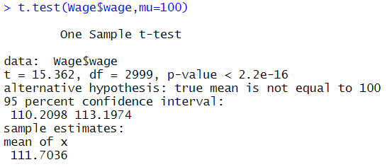
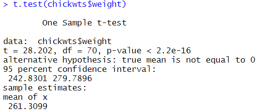
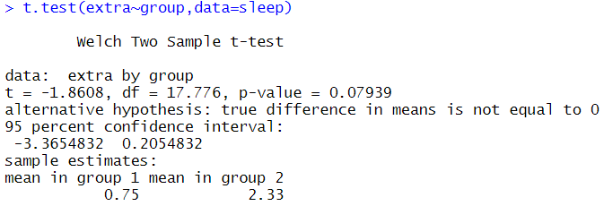

ADsP 문제 풀이 4일차
가설 검정
17회 기출문제
1. Wage데이터에서 wage에 대한 t-test를 실시하였다. 다음 설명 중 부적절한 것은?

한 집단의 평균에 대한 t-test 결과이다.
양측검정 결과를 보여주고 있다.
t-test의 자유도는 2999이다.
평균에 대한 95%신뢰구간은 귀무가설에서 설정한 평균의 참값을 포함한다.
14회 기출문제
2. 아래는 chickwts데이터 프레임을 분석한 것이다. 다음 중 결과에 대한 해석이 잘못된 것은?

전체 관측치 수는 70개이다.
99% 신뢰구간을 구하기 위해서는 "conf.level=0.99"라는 옵션을 사용할 수 있다.
닭 무게의 점 추정량은 261.3이며, 95% 신뢰구간은 242.8에서 279.8이다.
닭 무게에 대한 p-value는 2.2e-16이므로 귀무가설이 기각된다.
19회 기출문제
3. 아래 데이터는 두 종류의 수면 유도제를 무작위로 선정된 20명의 환자를 대상으로 수명시간 증감을 측정한 자료이다. 아래 결과에 대한 설명으로 잘못된 것은?

유의수준 1%하에서 수면유도제 2가 수면유도제 1보다 통계적으로 유의하게 평균 수면시간을 증가시킨다고 결론지을 수 있다. 즉, 수면 유도제2가 수면유도제 1보다 더 효과적이다.
수면유도제 1에 의해 평균적으로 0.75시간의 수면시간이 증가하였다.
수면유도제 2에 의해 평균적으로 2.33시간의 수면시간이 증가하였다.
두 수면유도제에 의해 증가된 평균 수면시간의 차이는 -3.37시간에서 0.21시간 사이에 있다고 95% 확신할 수 있다.
제출하기